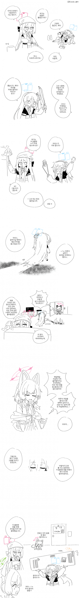

32 · 7 · 2 시간 전 · 원문

수집 당시 댓글 7개
메카다나카 · 3 시간 전
미녀와야스 · 2 시간 전
버려주마 하나오카유즈
번육개장먹는사람 · 2 시간 전
우디아빠 · 2 시간 전
ᅟᅠ듀 · 1 시간 전
이 망할 고철 청소기가ㅋㅋㅋㅋㅋ 쓰레기 치우라니까 방을 비우네 아ㅋㅋ
시라누이Q · 1 시간 전
다음화: 아루, 죽다
악질틀딱히틀딱 · 1 시간 전

버려주마 하나오카유즈